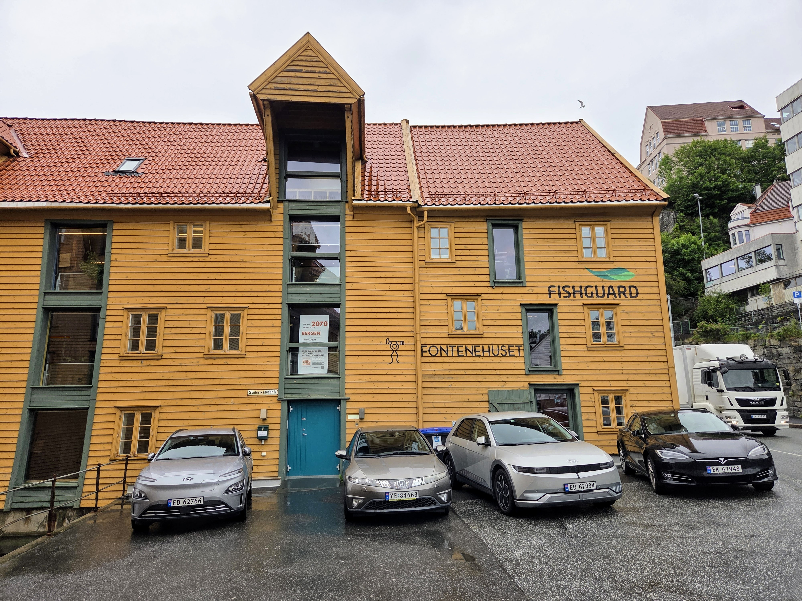

Fontenehuset i Bergen
Info om Fontenehus
Fontenehus-modellen har sitt utspring i Fountain House, som ble startet i New York i 1948 av en gruppe mennesker som hadde vært innlagt i psykiatrisk behandling. De erfarte at negative holdninger gjorde det vanskelig å få jobb eller bolig etter utskrivning. Modellen bygger på at medlemmer og ansatte jobber sammen som kolleger for å drifte huset, og legger vekt på fellesskap og mestring. I dag finnes det over 300 fontenehus i verden, og de drives etter de samme retningslinjene.
Fontenehuset Bergen er ett av flere Fontenehus rundt om i landet. Vi holder til i Skuteviksbodene 11, rett bortenfor Bryggen i Bergen.
Hva er et Fontenehuset i Bergen
Fontenehuset Bergen tilbyr frivillig arbeidstrening og felleskap der man kan få støtte til å nå sine mål - enten det er jobb, studier eller aktiv samfunnsdeltakelse. Vi er lokalisert i en nydelig sjøbod med unik atmosfære. Fontenehuset har fire enheter: Administrasjon, Media, Kjøkken og Studier.
Som student kan du benytte deg av de ulike tilbudene vi har på huset, som å bestille en god og rimelig lunsj fra Kjøkkenet, benytte deg av Kafèen som har et bredt utvalg av kaffedrinker og smoothier, eller være med på en felles tur med Turgruppen.
Det koster ingenting å bli medlem, og man trenger ikke henvisning.
Studier
Et studiemiljø med rom for deg
Å studere kan være krevende, og noen ganger trenger man mer enn bare en lesesal for å holde fokus.
På Fontenehuset Bergen finner du et rolig og støttende studiemiljø hvor du kan jobbe i ditt eget tempo og skape en struktur som paser for deg.
Hos oss får du et hyggelig felleskap og hjelp til å gjennomføre studiene dine.
Kodeloftet 1
Kodeloftet 1 er en innføring i HTML, CSS og Javascript. Det krever ingen forkunnskaper annet enn at man må kunne bruke en PC. All koding skjer på stackblitz.com, og man oppretter en github konto når man starter kurset.
Underviser og veileder er Julie Isobelle Hauge Hun jobber som junior Full Stack Developer hos Jobloop